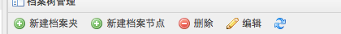
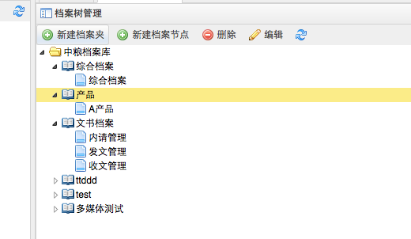

-
- 操作流程
- 点击首页功能菜单［系统维护－档案库维护］，打开档案库维护。
- 每个档案类型至少包含一个档案树节点，根据档案树节点来录入、显示档案。
- 档案树管理包括档案树的添加、修改、删除功能。
- 点击档案树管理按钮。打开档案树管理界面
- 添加
-

-

- 选择档案类型，点击［新建档案夹］或［新建档案节点］按钮。直接在当前节点下创建档案夹或档案节点。
- 档案夹可以理解为文件夹，可以包含子档案夹或子档案节点，便于管理。档案节点下不能创建档案夹。只有档案节点是最终存储档案条目数据的。
- 创建档案夹、档案节点的同时，可以更改默认名称。
- 删除
- 选择一个档案夹或档案节点，点击［删除］按钮，删除档案夹将删除档案夹下包含的子档案夹和档案节点，及档案节点下包含的数据、电子全文，请谨慎操作。
- 编辑
- 选择一个档案夹或档案节点，点击［修改］按钮，直接修改档案夹或档案节点的名称。